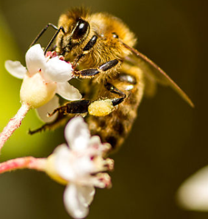
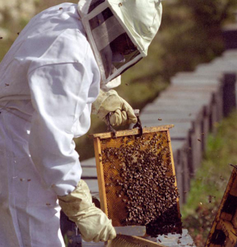
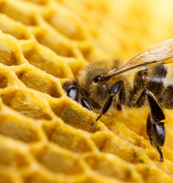
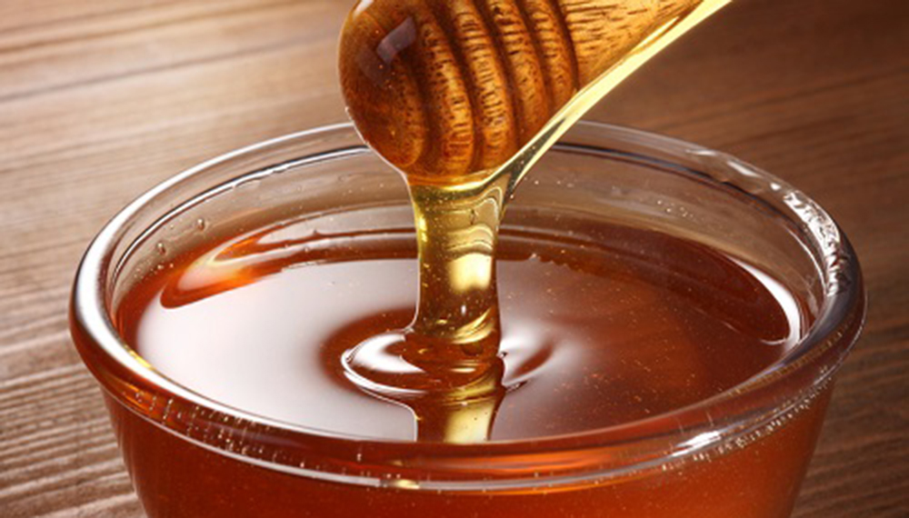
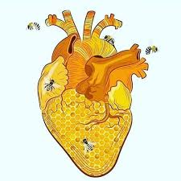
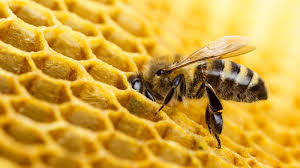

La miel y sus beneficios
Las abejas son criaturas increíbles. No sólo fabrican miel, sino que también polinizan las flores y ayudan a producir fruta. En la Patagonia chilena hay un tipo especial de abeja que produce una miel con beneficios únicos. Se dice que esta miel tiene propiedades antiinflamatorias y puede ayudar a curar heridas. También se dice que es buena para el sistema inmunológico y puede ayudar a combatir las infecciones. La miel la elaboran las abejas que se alimentan del néctar de ciertas flores que crecen en la región. Las abejas transforman este néctar en miel. La miel es de color oscuro y tiene un sabor característico. No es tan dulce como otros tipos de miel. Si alguna vez está en la Patagonia chilena, no deje de probar esta miel única. Puede que descubra que tiene algunos beneficios increíbles para su salud.



Los beneficios de la miel son muchos, y la región de la Patagonia de Chile es un excelente lugar para encontrarla. Las abejas de esta región son de las más productivas del mundo, y elaboran una miel tan deliciosa como nutritiva. La miel se ha utilizado durante siglos como remedio natural para diversas dolencias. Se sabe que alivia el dolor de garganta, ayuda en los problemas digestivos e incluso refuerza el sistema inmunológico. La miel también es una gran fuente de energía y se dice que ayuda a mejorar la función cognitiva. Las abejas de la Patagonia pueden producir una miel de tan alta calidad gracias a la abundancia de flores de la región. El clima templado y la larga temporada de crecimiento permiten que florezca una gran variedad de flores, a las que las abejas tienen acceso durante todo el año
Los beneficios de la miel son conocidos desde hace siglos. La miel de la región patagónica de Chile es especialmente beneficiosa, debido a su clima y terreno único. Las abejas que producen esta miel son capaces de tomar más néctar de las flores, y como resultado, la miel es más rica en nutrientes. Los beneficios de la miel incluyen su capacidad para ayudar a la digestión, aliviar las alergias y aumentar los niveles de energía. También se ha demostrado que la miel es eficaz para tratar heridas y quemaduras. Las propiedades únicas de la miel la seguirán en un valioso complemento para cualquier botiquín. Quienes busquen una alternativa a la medicina tradicional encontrarán en la miel un útil complemento para su arsenal.
No lo olvides

Una gran cantidad de nutrientes
Solo una cucharada de miel (21gramos) puede llegar a contener lo siguiente
- 64 Calorias
- 17gr de azúcar, incluidas la fructosa, glucosa, maltosa y sucrosa
- Está casí libre de fibra, grasa o proteína
- Vitaminas y minerales en cantidades pequeñas
- Antioxidantes

Contiene beneficios cardiovasculares
Los fenoles y otros compuestos antioxidantes de la miel tienen muchos otros efectos sobre la salud del corazón. Por ejemplo, ciertos estudios han brindado las siguientes conclusiones:
- Ayuda a dilatar las arterias del corazón, aumentando el flujo de sangre
- Previene la formación de coágulos de sangre
- Protege el corazón del estrés oxidativo

Somos importantes
Las abejas forman parte importante de la diversidad de especies, siendo las responsables de la reproducción de muchas plantas, ya que cada vez que una de ellas recoge néctar y polen, se desplaza a otra para hacer lo mismo, este acto es el más beneficioso para las plantas, ya que el 84% de los cultivos comerciales de alimentos depende de esto.
Ésta no sólo se queda en la producción de frutales, frutos secos o semillas, estan en todas partes, en las plantas de cobertura, pastizales, hierbas, árboles y en forrajes para alimentación del ganado.